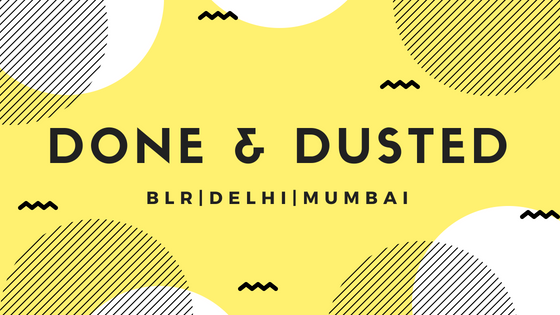

CFK Community Catch-up August [Recap]
A month full of Community activities!!

When it comes to building a community, it’s equally important to build an offline community to solidify the bond among members of the community. Therefore, we try to catch up with our folks across India at least once a month. The agenda of our meet-ups is simple- To know your folks personally and learn from their community building experiences. So, we planned pan India meet-ups in the month of August and were successful in bringing real community enthusiasts under a roof. Community builders usually have tight schedules throughout the week and to get them together on a lazy Sunday morning for a general catch-up is not that easy. But as said, those who really want to nourish their relationships and meet like-minded fellows, take their time out anyhow to meet new people.
BENGALURU CHAPTER
Thus, on August 12, a Sunday morning, we gathered at 91Springboard and started with the introduction session where all the members told about themselves, the community they are into or building and the achievements they have got in the recent months! So, we got to know that one of our members, Teja Bitra, who is building a community of freelancers and organise offline meet-ups to connect them for their requirements, has opened up a new chapter in Hyderabad and got an addition of 300 members in his community within two months!!!
Another member of our community, Priya S has started building a community of local food lovers of Bangalore who want to explore the real and traditional taste of southern India. Then, we got to know about Sam Rahman, who is building a community of people who value their relationships more than anything.We had Pradyumna Kulkarni who joined us recently and became a part of this meet-up! He runs a community of artists.
After the introduction sessions and a few community-related chit-chats, we started with the Presenter of the Day- Yashraj Nayak who shared his journey from his decision to drop out, his interactions with Pushstart community to him being involved with Hour of Code to Microsoft Student Partners to the Japanese EdTech platform — Progate!”
Link to Yashraj’s talk — https://youtu.be/9r1NPFAFZ4U Soon after that, we rushed to have lunch and spent some more time together! Thus, it came out to be a fruitful day for everybody!
DELHI CHAPTER
After Bangalore, we had a catchup in Delhi on 18th August where 15 people turned up. So, we started with the introduction part of each member. Soon after that, we got to know about Avani ‘s story from SHEROES to Facebook Program Manager and later followed by members asking their specific problem which they face in routine. Also, Avani helped everyone know about Facebook’s programs for Community Managers.
An exciting part of this meet-up was, everyone met Karuna, who joined our online community the same day in the morning and landed up to meet us offline. She is a mom, teacher and Moderator at Delhi Moms Community. Members helped her sort issues of getting access of diapers to physically challenged children. And the meetup ended on a promise of showing up for next event as well & making our circle bigger. Special thanks to Abhishek Kumar Gupta for being there always & support our Delhi CFK Community.
MUMBAI CHAPTER
On 25th August, we organised a community catch-up at Khar Social for the first time in Mumbai. This wasn’t the same as the Bangalore and Delhi meet-ups because we kept it open for all the community enthusiasts regardless of them being a member of this community or not. The agenda of this meet-up was to spread awareness about the importance of community for a brand.
We had 3 speakers- Nirav Mehta who is the Co-founder of Broke Bibliophiles — Bombay Chapter, Founder of Bibliophiles of Bombay and also runs The Regional Literature Book Club. Yashraj Akashi, who is the Founder & Licensee of TEDxGateway and Ankush Saxena, who is the co-founder and admin of Broke Bibliophiles — Bombay Chapter and the meet-up was coordinated by Mulchand K Dedhia[Founder at Photo Konnect] Mahesh Chikane [Founder at The Test Tribe] and Neeraj Joshi [Founder at Pushstart].
And there were around 35 people who turned up for the meet-up. So, it started with the queries of people who were in the process of building their communities or were stuck somewhere and needed advice on how to scale it further. So basically we had two audiences, the community creators and the community managers.
The panel discussion was mainly about the process of an early stage of building a community followed by how to scale the community which covered mostly the hacks on the content to be posted, driving engagement and consistency. We also spoke about the brand engagement and activation, monetising the community, sponsorships for the events etc. Thus, it was overall a very informative session followed by the networking session of the attendees.
It takes a little effort to make your bond strong with the like-minded fellows. And we are glad that our community is full of such crazy people who don’t have to think twice for taking this initiative!! Next, we are planning a first-ever full-day conference for all community leaders in India! Please stay tuned. If you are a community enthusiast too, come, join our community and be the part of this awesome tribe!

About The Author
Community Manager | Tech Evangelist | Story-teller | People Person